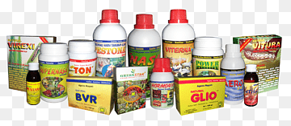

Inicio
Bienvenido a Agrivereda, tu fuente de información sobre cultivos. Aquí encontrarás detalles sobre procesos de cultivo, insumos, información detallada sobre diversos cultivos y mucho más.

Acerca de
NUESTRA HISTORIA
Somos un equipo de investigadores agrónomos comprometidos con el desarrollo sostenible de la agricultura. En esta página te contaremos la historia de Agrivereda, cómo nació nuestra pasión por la investigación y cómo hemos logrado diferenciarnos en el mercado gracias a nuestra metodología única.En Agrivereda creemos en la importancia de compartir conocimiento para hacer crecer la industria agrícola, por eso también te contaremos sobre nuestros proyectos más importantes y cómo hemos ayudado a nuestros clientes a mejorar sus cultivos. ¡Bienvenido a Agrivereda!

Cultivos
Maíz
El maíz es uno de los cultivos más importantes a nivel mundial. Es una gramínea de gran relevancia tanto en la alimentación humana como en la producción animal.
Tomate
El tomate es una planta de la familia de las solanáceas. Es ampliamente utilizado en la gastronomía y es rico en nutrientes como licopeno y vitaminas.
papa
La papa, también conocida como guisante, es una planta leguminosa. Es una excelente fuente de proteínas vegetales y se cultiva para consumo humano y forraje animal.

Insumos
Fertilizantes
Los fertilizantes son sustancias que aportan nutrientes a las plantas para promover su crecimiento y mejorar la calidad del suelo.
Coadyuvantes
Descripción de coadyuvantes


Insecticidas
Descripción de insecticidas


Fungicidas
Descripción de fungicidas


Herbicidas
Descripción de herbicidas


Abonos
Descripción de abonos


Procesos
Maíz
El maíz es uno de los cultivos más importantes a nivel mundial. Es una gramínea de gran relevancia tanto en la alimentación humana como en la producción animal.
Tomate
El tomate es una planta de la familia de las solanáceas. Es ampliamente utilizado en la gastronomía y es rico en nutrientes como licopeno y vitaminas.
papa
La papa, también conocida como guisante, es una planta leguminosa. Es una excelente fuente de proteínas vegetales y se cultiva para consumo humano y forraje animal.
Contacto
Puedes contactarnos a través del siguiente número telefónico: +57 3108017340.
O a travez del siguiente correo electrónico: andresmurcia0904@gmail.com